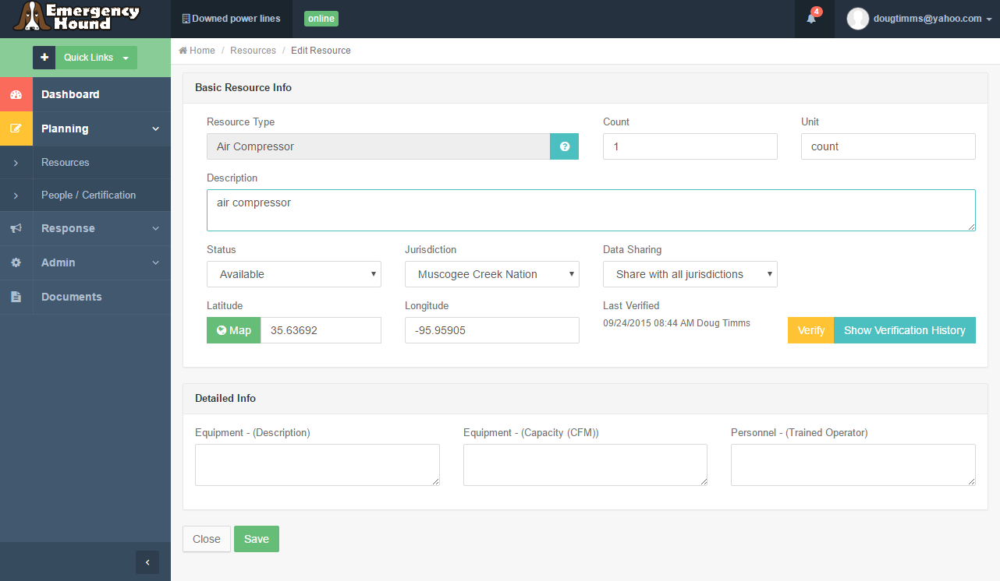
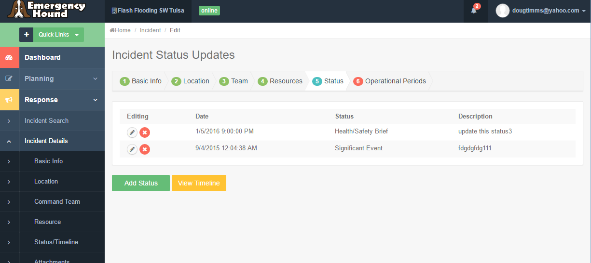
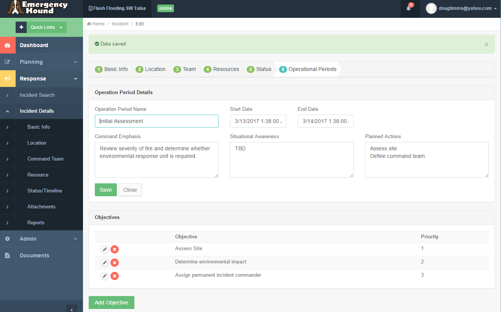

Overview
Emergency Hound helps agencies prepare for and respond to emergencies.
Features:
- Plan for emergencies by maintaining a list of available resources
- Verify resource availability and track your verification history
- Maintain a directory of available emergency responders
- Track which certifications are held by responders
- Track incident information
- Define the incident response team, including reporting relationships
- Track many incident details (e.g objectives, status updates, operational periods, safety plans, etc)
- View incidents, available resources and nearby environmental concerns on a map
- Generate some reports
Getting Started
To begin using Emergency Hound, you must first register an account. When registering an account, you will be asked to select the Jurisdiction to which your account will be associated. If you do not see your jurisdiction listed, it may mean that your jurisdiction is set to "Private" in Emergency Hound, and your Jurisdiction administrator will associate your account manually. Or it could mean that your jurisdiction is not setup to use Emergency Hound, in which case you will need to get in touch with an Emergency Hound administration for further instructions.
When you register, the system will email you with an activation link. Only after you have activated this link will you be able to use the system.
Note: account registration can currently only be done through the web application and NOT through the mobile app.
Resource Management
Emergency Hound allows emergency management personnel to maintain an inventory of emergency response resources. Emergency Hound tracks three different categories of resources:
Categories of Resources
- Equipment or supplies (e.g. Air Compressors, Track Dozers, or pallets of bottled water)
- Responder Teams (e.g. Canine Search and Rescue Team, Rapid Needs Assessment Team)
- Individual Responders
View Resources
To view a listing of resources you have access to, click on the (Planning --> Resources) left menu item. An example screen is shown here:
This grid will display the following:
- Resources maintained by your organization
- Resources maintained by other organizations that have been set by the other organization as publicly viewable
Deleting a Resource
You can delete a resource by clicking the red X icon.
Add or Edit Resource
To add a resource, click on the (Planning --> Resources) left menu item. Then click the Add Resource button. To edit an existing resource, click on the (Planning --> Resources) left menu item. Then click the pencil icon. You will be shown a screen like the following:

You can enter information about the resource such as resurce description, number of available resources, current resource status, resource location, and resource detailed information.
Note: if you want to use a Resourc Type that is not included in the list, you must contact an administrator, since only administrators can add new Resource Types.
The detailed information available depends on the type of resource.
Resource Verification
Click on the Verify button to verify the resource. You can also click on the "Show Verification History"
button to show a history of all times in which the resource has been verified.
Qualification/Certification Management
This section describes how to manage individual certifications/qualifications in Emergency Hound. To view a listing of people you can view or edit, click on the (Planning --> People/Certification) left menu item. An example screen is shown here:
Add Individual
To add an individual, click on the (Planning --> People/Certification) left menu item. Then click the Add Person button. To edit an existing person, click on the (Planning --> People/Certification) left menu item. Then click the pencil icon. You will be shown a screen like the following:
Add/Edit Certification
After a responder record has been created, you can then maintain a listing of certifications that they hold.
To do this, click on the "Add Certification" button, enter in a qualification type, effective and expiration dates, then click the Save button.
Incident Management
Emergency Hound allows emergency management personnel to keep track of incident response activities.
Add or Edit Incident
To add an incident, click on the (Response --> Incident Search) left menu item. Then click the Create New button. To edit an existing incident, click on the (Response --> Incident Search) left menu item. Then click the pencil icon for a particular incident. You will be shown a screen like the following:
You can enter information about the incident such as incident ID, name, priority, description, jurisdiction, weather conditions, and incident start date/time.
Incident Location
Click on the Location tab to view or edit the incident location.
Incident Team
Click on the Team tab to view or edit the incident command team.
You can assign either an individual (created at the Planning>People page) or a team (created at the Planning>Resources page) to the incident.
To create a new entry for the command team, click the "Add Team Member" button. Then provide a role description (mandatory) and either assign an individual or a team (not both).
It is possible to create a role for the command team (e.g. Incident Commander) and save the record without yet assigning an individual or team member. When you eventually assign a person or team to the role, the entry will change from red to green color.
To edit an existing team role, hover over the entry and click the pencil icon.
Incident Resources
You can assign resources from your master list of maintained resources to a particular incident. To do this, click on the Resources tab to view or edit the incident resources.

Status Updates
You can provide ongoing status updates for an incident. To do this, click on the "Status" tab.
Click on the "Add Status" button to add a new status update. Currently three different types of status updates are allowed:
- Situation Summaries
- Health and Safety Briefings
- Significant Events
You can also click on the "View Timeline" button to view a timeline of important events in the history of an incident. This includes the following possible events:
- Incident creation date/time
- Status Updates
- Resources added to an incident
- Attachments added to an incident
- Operation Period start date/times
Operational Periods
Click on the Operational Periods tab to view or edit the operational periods defined for this incident.
Here you can edit the operational period name, start and end dates/times, command emphasis, situational awareness, planned actions, and objectives for this period.

Add Incident Attachments
You can upload files for an incident. This can include items such as images or videos taken onsite at an incident.
To add attachments to an incident, click on the Attachments menu item, then click on the "Add Attachment" button. If you are using this feature in the mobile version, your mobile device will ask whether you want to take a new picture or video, or upload an existing one from your gallery.
Notify Nearby Responders (Mobile only)
Note: In order to allow other users to notify you, you must go to the User Profile screen and enable the "Allow Tracking" feature. Once you allow this, any time you are actively running the mobile app, your location will be tracked and other will be able to see your location and notify you via phone call or text message.
To search for nearby responders, click on the incident you are currently working on, and go to the Map tab.
If there are any responders nearby, you can see them on the map. This is only possible if the following conditions are met:
- The User is currently running Emergency Hound on their device
- The User has enabled location tracking in Emergency Hound
If you see a responder on the map, you can click on their icon on the map, and then click the phone icon or text message icon to either call them or send them a text message.
Admin: User Management
This section describes how to manage user accounts and security rights.
Although users will self register, association with a particular jurisdiction needs approval from an administrator.
If you are already setup in the system as a jurisdiction administrator, when another user registers an account and requests access to your jurisdiction, you will receive an email. You can then login to Emergency Hound, and on the dashboard see the association request as pending. You can then choose to either approve or deny the association.
Note: this feature can only be done through the web application and cannot be done in the mobile app.
As an administrator, you may need to perform other administration tasks for user accounts, such as updating email address or inactivating accounts. This can be done at the Admin --> Users screen
Admin: App Settings
Emergency Hound contains several application default settings, which can be modified by system administrators. These include:
- Email Server settings
- Public Application Path (used in emails)
Admin: Reference Data Management
This section describes how to manage reference data.
Edit Reference Data
Certain reference data can be updated through Administration screens, while others can only be updated directly in the database. The following reference data can be updated through user screens:
- Jurisdictions
- Resource Types